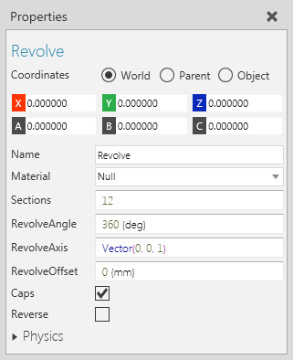
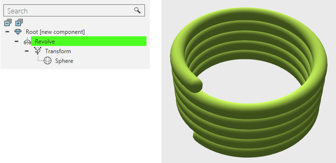

A Revolve feature sweeps the geometry of child features along a path, thereby constructing new geometry.

Generally, a Revolve operation is used to sweep geometry, which sometimes requires the use of Transform and Extrude features.

| Name | Description |
| Name | Defines the name of the feature. |
| Material | Defines the material of the feature. |
| Sections | Defines the amount of sections around the longitudinal circumference of the revolved child features. |
| RevolveAngle | Defines the angle to revolve child features. |
| RevolveAxis | Defines the direction and axis for revolving child features. |
| RevolveOffset | Defines an offset for revolving child features. |
| Caps | Turns on/off the rendering of caps in the feature. |
| Reverse | Turns on/off the reversal of the feature's child features. |
| Physics | Defines a set of physics properties for the feature. |